Название прибора конденсатора происходит от слова condensatio – накоплять, то есть он является накопителем
электрической энергии. Физически конденсатор представляет собой две пластины из токопроводящего материала,
разделенные диэлектриком. Накопление энергии происходит как раз в электрическом поле диэлектрика. При этом
обкладки приобретают определенный электрический заряд. , то есть мера вмещения в себя электрической энергии,
численно равна отношению заряда Q на одной из его обкладок к вызываемой этим зарядом разности потенциалов
между обкладками, то есть напряжению на конденсаторе V:
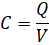
Из этого соотношения следует, что заряд находящийся «внутри» конденсатора равен произведению его емкости и
напряжения на нем:
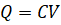
Поскольку заряд равен произведению силы тока I на время t, то мы получаем важное на практике соотношение:
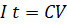
которое, перепишем для лучшего понимания в виде:
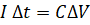
Это соотношение означает, что при протекании через него тока I за время Δt напряжение на конденсаторе емкости
C изменяется на величину ΔV. Это соотношение часто используется при практических расчетах тех или иных
режимов работы конденсатора. Если ток изменяется во времени и при этом необходим расчет с
«физико-математической точностью» то используют соотношение связывающее напряжение на конденсаторе, его
емкость и ток:
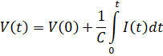
здесь:
V(0) – напряжение на конденсаторе в начальный момент времени (как правило всегда равно нулю);
V(t) – напряжение на конденсаторе в любой момент времени t;
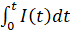 – интеграл от тока I(t) по времени. Физически этот интеграл есть
изменение заряда на обкладках.
С – собственно емкость конденсатора.
Энергия конденсатора WC определяется как половина произведения емкости на квадрат напряжения:
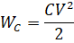
Можно ли «закачивая» заряды на обкладки повышать напряжение на конденсаторе до бесконечности. Нет, этого
делать нельзя, поскольку в некоторый момент времени напряженность поля в диэлектрике в некоторый момент
времени превысит некоторое максимальное значение, называемое пробивной напряженностью поля. Таким образом,
кроме емкости конденсатор характеризуется еще и другим параметром – max. Емкость и максимальное рабочее напряжение
являются основными параметрами любого конденсатора, и они обычно указываются на его корпусе.
Единица измерения электрической емкости – Фарада. В честь британца Майкла Фарадея.
Условное обозначение конденсатора:
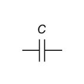
Рисунок C.1 - Условное обозначение конденсатора
Свойство конденсатора накапливать электрический заряд на обкладках определяют его функциональное
назначение:
- в качестве накопителя энергии;
- в составе времязадающих RC-цепочек;
- в составе резонансных LC-контуров;
- в качестве фильтрующего элемента входных и выходных цепей источников питания;
- в составе интегрирующих RC-цепочек и дифференцирующих RC-цепочек;
- в качестве токоограничивающего элемента в цепях переменного тока;
- в емкостных делителях напряжения;
- в умножителях напряжения;
- в качестве элемента, обеспечивающего развязку по постоянному току;
- в цепях компенсации реактивной мощности.
Как конденсатор пропускает ток. Реактивное сопротивление. Максимальный ток через
конденсатор
Переменный ток, протекающий через конденсатор можно считать различными способами. Первый и более
фундаментальный способ заключается в том, что ток протекающий через конденсатор пропорционален скорости
изменения напряжения на нем dV/dt и собственно емкости конденсатора С:
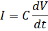
Из этого фундаментального соотношения следует формула для действующего (среднеквадратичного значения)
значения синусоидального тока через конденсатор:
По аналогии с законом Ома I=V/R из вышележащего соотношения находят так называемое реактивное сопротивление
конденсатора ZC:
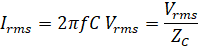
где реактивное сопротивление:
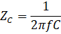
Реактивное сопротивление конденсатора определяется его емкостью и зависит от частоты. В ряде случаев по
величине реактивного сопротивления рассчитывается ток, протекающий через конденсатор.
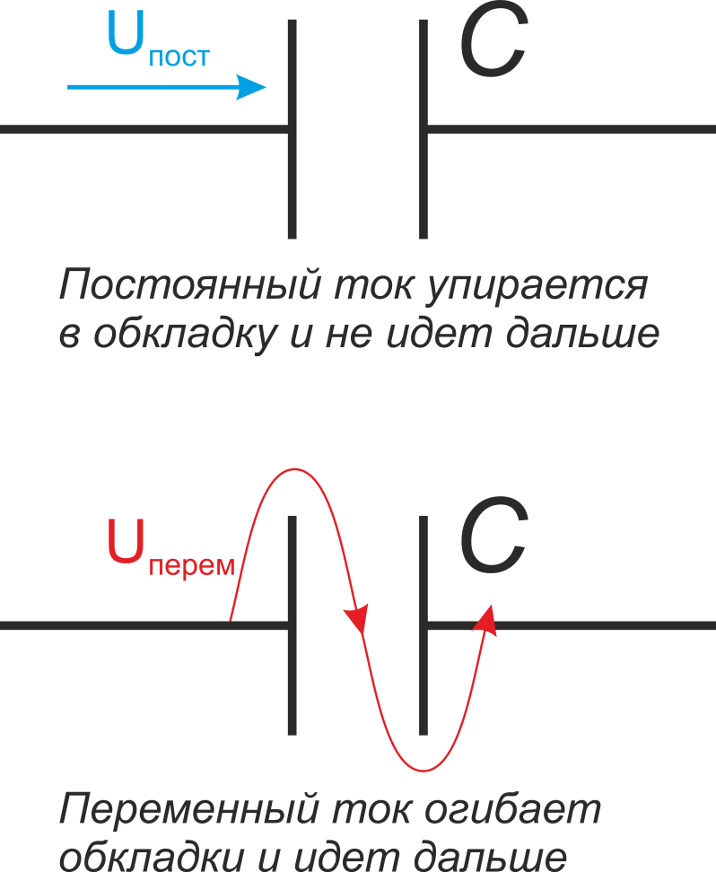
Рисунок С.2 - К вопросу, почему конденсатор не проводит постоянный ток и проводит переменный (:-))
Существует ли максимальный ток, который можно пропускать через конденсатор? Да. Для силовых конденсаторов
существует такой параметр как максимальная реактивная мощность. Единица её измерения – вольт-ампер
реактивный – ВАр, но так как конденсаторы силовые, то более распространена единица киловольт-ампер
реактивный – кВАр (kvar – по международным обозначениям). Каждый тип силовых конденсаторов имеет
максимальное значение проходящей через них реактивной мощности.
Максимальная реактивная мощность PZ определяется аналогично тепловой мощности резистора (см.
раздел «Резисторы»):
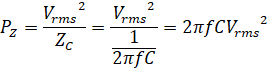
, проходящий через конденсатор, (а точнее его
среднеквадратичное значение), определяется его максимальной реактивной мощностью:
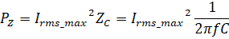
откуда:
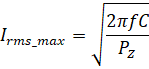
Физически это означает, что если мы знаем кВАр-ность конденсатора PZ и его емкость C, то мы можем
рассчитать его максимальный ток для каждого конкретного значения частоты f. Здесь
Irms_max – максимальное действующее значение тока, проходящего через
конденсатор. Оно зависит от формы импульсов тока через конденсатор (формулы представлены в разделе
«Резисторы»).
На высоких частотах проявляются паразитные параметры конденсатора:
L – паразитная последовательная индуктивность. Распространённый международный термин - ESL (Equivalent Series
Inductance);
R – паразитное последовательное сопротивление. Распространённый международный термин - ESR (Equivalent Series
Resistance);
r – сопротивление утечки (Leakage Resistance).
Эквивалентная схема конденсатора представлена на рисунке C.3.
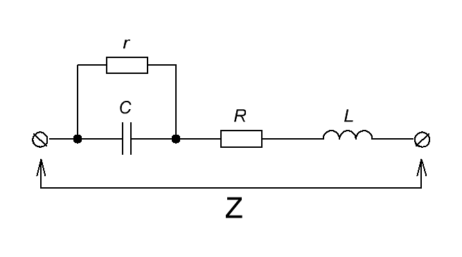
Рисунок C.3 - Эквивалентная схема конденсатора
Паразитная индуктивность L определяется конструкцией и габаритами конденсатора. Так, конденсаторы с
ленточными обкладками, свернутыми в цилиндр имеют наибольшее значение индуктивности. Дисковые и
SMD-конденсаторы – наименьшее. Индуктивность возрастает с увеличением габаритов конденсатора.
Последовательное сопротивление R определяется сопротивлением обкладок конденсатора. Конденсаторы с ленточными
обкладками, как правило, имеют большее значение последовательного сопротивления по сравнению с дисковыми и
SMD. В свою очередь конденсаторы с ленточными обкладками в виде фольги имеют меньшее последовательное
сопротивление по сравнению с обкладками, полученными металлизацией. Сокращенное обозначение
последовательного сопротивления – ESR. Этот параметр часто используется при расчете работы импульсных схем.
В частности он оказывает существенное влияние на работу емкостных фильтров-накопителей.
Параллельное сопротивление r целиком определяется параметрами диэлектрика, находящегося между обкладками
конденсатора. Оно определяет утечку или саморазряд конденсатора. Именно возможность использования в качестве
межобкладочного материала различных типов диэлектриков и определяют многообразие типов конденсаторов.
Индуктивность L и последовательное сопротивление R оказывают существенное влияние при высоких частотах и при
импульсных режимах работы. Параллельное сопротивление, определяет потери конденсатора на постоянном
напряжении и низких частотах.
Понятие тангенса угла диэлектрических потерь tg δ пришло из классической электротехники в которой оперируют
векторными диаграммами. В идеальном конденсаторе угол сдвига фаз между током и напряжением составляет 90%
(при синусоидальной форме напряжения – ток максимален в момент, когда напряжение на конденсаторе равно нулю
и равен нулю, когда конденсатор заряжается до максимального значения). Но в реальном конденсаторе по причине
параллельного эквивалентного сопротивления r (сильное влияние на низких частотах) и последовательного
эквивалентного сопротивления R (сильное влияние на высоких частотах) угол сдвига фаз между током и
напряжением не добирает до 90° некоторыйугол δ – смотри упрощенные эквивалентные схемы, представленные на
рисунке C.4. Таким образом, тангенса угла диэлектрических потерь – это некоторый интегральный параметр,
характеризующий потери в конденсаторе. При этом он различается для высоких и для низких частот.
Для низких частот физически тангенс этого угла tg δ равен отношению резистивного тока Irпроходящего
через параллельное сопротивление потерь r к емкостному току IC, проходящему собственно через
емкость:
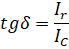
Для высоких частот более существенные потери вносит последовательное сопротивление. В этом случае тангенс
этого угла tg δ равен отношению падения напряжения VRна последовательном сопротивлении R к
падению напряжения на собственно на емкости VC :
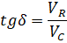
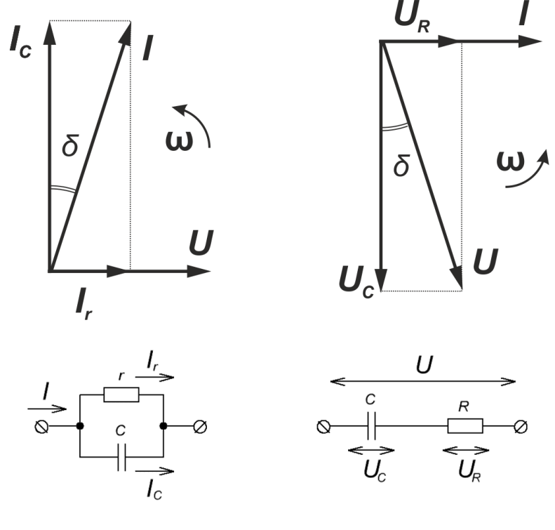
Рисунок C.4 – К пониманию тангенса угла потерь - эквивалентные схемы конденсатора (слева – характерные
для низких частот, справа – характерные для высоких частот) и векторные диаграммы тока и напряжения
Поскольку в тангенс угла потерь входят емкостной ток и напряжение, то сравнение тангенса угла различных типов
конденсаторов имеет смысл только при определенной равной частоте. Как правило, для большинства диэлектриков
тангенс потерь измеряется на частоте 1 кГц, однако для высокочастотных диэлектриков (полипропилен,
фторопласт, NPO) приводятся измерения на частотах 1 МГц и выше.
В более общем понимании, применимом к конденсатору в целом тангенс угла потерь определяет отношение между
активной RC и реактивной ZC составляющими импеданса конденсатора [Керамические
конденсаторы MLCC: особенности применения -
http://www.compel.ru/lib/articles/keramicheskie-kondensatoryi-mlcc-osobennosti-primeneniya/]:
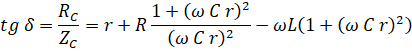
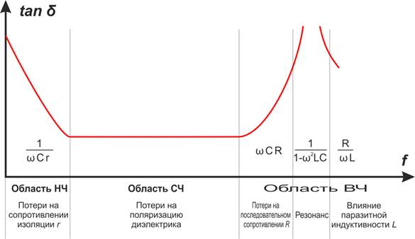
Рисунок C.5 – тангенс угла потерь конденсатора на различных частотах [DATASHEETSURFACE-MOUNT CERAMIC
MULTILAYER CAPACITORS Introduction. YAGEO Phicomp. ProductSpecification – Dec 06, 2010 V.11]
Таким образом, в реальных конденсаторах понятие тангенса угла потерь имеет сложный характер (рисунок C.5) и
определяется не только типом диэлектрика, но и паразитными последовательным сопротивлением и
индуктивностью.
Иными словами необходимо понимать различие понятий тангенса угла потерь конденсатора и тангенса угла потерь
диэлектрика. Тангенс угла потерь диэлектрика определяет потери конденсатора на низких и средних частотах. На
высоких частотах определяющим является вклад паразитных индуктивности и последовательного сопротивления.
Тангенса угла потерь конденсатора определяет его нагрев. Тепловая мощность, выделяемая в объеме конденсатора
определяется суммарной мощностью потерь в диэлектрике и на сопротивлении обкладок. Тангенс угла потерь
конденсатора определяет все эти различные составляющие и тепловая мощность нагрева конденсатора равна:
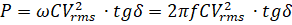
Другие параметры реальных конденсаторов
Кроме паразитных параметров каждый конкретный тип конденсаторов характеризуется еще и такими характеристиками
как:
- номинальная точность емкости, определяющая максимальное отклонение от номинального значения;
- температурный коэффициент емкости (ТКE) характеризующий изменение емкости при изменении температуры на 1%.
Для конденсаторов с сильной зависимостью емкости от температуры (например керамических) указывают
относительное изменение емкости в процентах;
- эффект смещения при постоянном токе (DC-bias) определяющий относительное изменение емкости конденсатора от
приложенного напряжения. Уменьшение емкости с ростом напряжения характерно для керамических
конденсаторов;
- диэлектрическая абсорбция – появление напряжения между обкладками конденсаторов после быстрого разряда.
Эффект обусловлен тем, что реальный конденсатор в данном случае можно представить параллельным соединением
множества последовательных RC-цепочек с различной постоянной времени. Интенсивность диэлектрической
абсорбции главным образом зависит от свойств диэлектрика конденсатора (наиболее сильно проявляется эффект
для электролитических конденсаторов, наименее заметно – для конденсаторов на основе неполярных диэлектриков
(фторопласт, полистирол, полипропилен).
показывает
относительное изменение емкости при изменении температуры окружающей среды на один градус кельвина:
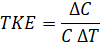
где:
ΔC – изменение емкости конденсатора С;
ΔT – изменение температуры, вызвавшее изменение емкости ΔC.
Понятие температурного коэффициента емкости (ТКЕ) имеет смысл только для конденсаторов с диэлектриком имеющим
линейную температурную зависимость.
Типовые номиналы емкостей конденсаторов
Для большинства практических случаев используется диапазон значений емкости конденсатора 1 пФ (пикофарад) –
10000 мкФ (микрофарад). Этот диапазон разбит на несколько рядов. Для конденсаторов наиболее распространенным
является ряд E6. Значения номиналов рядов приведены в таблице C.1.
Таблица C.1. Значения наиболее распространенных номиналов рядов емкостей конденсаторов.
Ряды
Номиналы
E3
1,0
2,2
E6
1,0
1,5
2,2
Ряды
Номиналы
E3
4,7
E6
3,3
4,7
6,8
Параллельное и последовательное включение конденсаторов
Емкость соединенных конденсаторов равно сумме
емкостей каждого из конденсаторов:
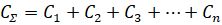
Емкость соединенных конденсаторов есть
величина обратная сумме обратных величин емкостей конденсаторов каждого из конденсаторов:
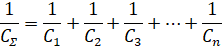
соединение конденсаторов используют для:
- увеличения суммарной емкости;
- увеличения запасаемой энергии;
- уменьшения уровня пульсаций на конденсаторах фильтра;
- снижения эффективного последовательного сопротивления (ESR) конденсаторной батареи. По этой причине
параллельное соединение часто используется при построении емкостных фильтров на основе «электролитов». Так
два-четыре параллельно соединенных «электролита» обеспечивают меньшие пульсации, чем один большой при равной
ёмкости.
- увеличения максимальной реактивной мощности (кВАр – ности) конденсаторной батареи, что необходимо в случаях
работы с большими токами.
- снижения паразитной индуктивности;
- получения точного номинала ёмкости.
соединение конденсаторов используют для:
- увеличения максимального рабочего напряжения – при условии равных емкостей рабочие напряжения
складываются;
- уменьшения емкости;
- увеличения запасаемой энергии (при условии одновременного повышения напряжения);
- увеличения максимальной реактивной мощности (кВАр – ности) конденсаторной батареи, за счет увеличения
рабочего напряжения.
- увеличения суммарного реактивного сопротивления;
- построения емкостных делителей напряжения;
- получения точного номинала ёмкости.
На практике при параллельном и последовательном соединении конденсаторов особенно в импульсных и работающих
на переменном токе схемах целесообразно использовать конденсаторы одного типа. При использовании
конденсаторов разных типов возможны перенапряжения из-за различия паразитных параметров конденсаторов.
Дополнительно при последовательном соединении конденсаторов, особенно «электролитов» необходимо использовать
уравновешивающие резисторы (см. схему на рисунке C.6).
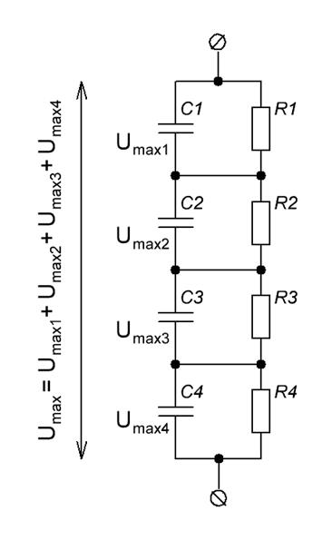
Рисунок C.6 - Последовательное соединение конденсаторов совместно с уравновешивающими резисторами
Конструкции конденсаторов
Тип конденсатора определяется двумя базовыми параметрами – формой и содержанием:
- форма = геометрия обкладок и диэлектрика;
- содержание = тип материала диэлектрика и обкладок.
Рулонная конструкция конденсатора (рисунок C.7) является одной из наиболее распространенных. Причиной этого
является её технологичность и простота. Особенно широко используется при создании конденсаторов с большой
ёмкостью. Практически все электролитические конденсаторы, полипропиленовые конденсаторы большой емкости,
бумажные конденсаторы имеют рулонную конструкцию. К недостаткам конструкции относят: значительное
последовательное сопротивление и большую паразитную индуктивность. При прочих равных параметрах с
увеличением емкости данные паразитные параметры возрастают.
По типу корпуса и/или организации выводных электродов можно провести еще ряд градаций:
– аксиального или радиального типа;
– тубулярные или овальные по форме;
– индуктивные и неиндуктивные;
– боксовые или залитые (компаундом)
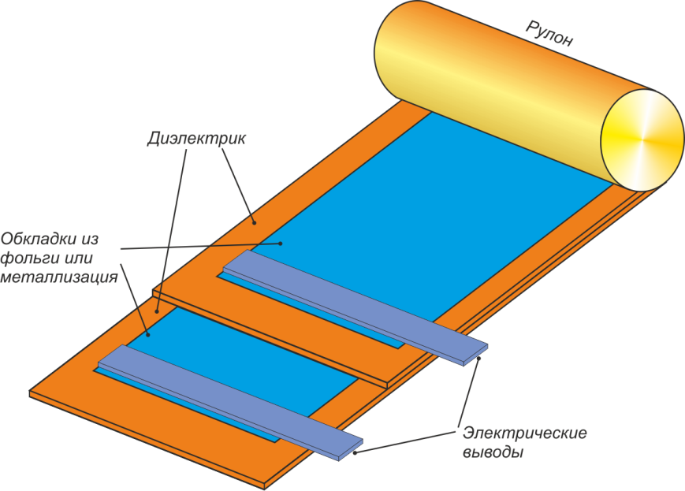
Рисунок C.7 - Рулонная конструкция конденсатора
Конденсаторы многослойной конструкции (рисунок C.8) распространены несколько меньше, сложнее технологически
и, по сравнению с рулонными, имеют существенно меньшую максимальную емкость. Преимуществами многослойных
конденсаторов являются малые значения паразитных параметров – последовательного сопротивления и
индуктивности.
Дисковые конденсаторы (рисунок C.9), как правило, имеют высокое рабочее напряжение, малую емкость (10 нФ и
менее) и используются в высокочастотных и импульсных цепях. Значения последовательного сопротивления и
паразитной индуктивности крайне малы. Высоковольтные высокочастотные конденсаторы имеют дисковую
конструкцию.
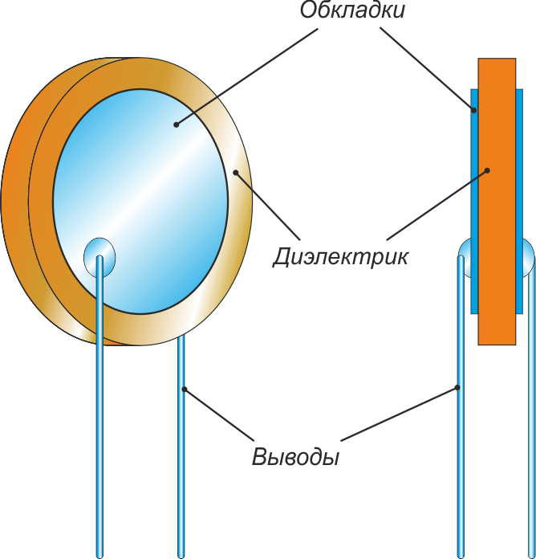
Рисунок C.9 - Конструкция дискового конденсатора
Существуют и другие, менее распространенные типы геометрии конденсаторов – трубчатые, сферические и т.д.
Однако они используются достаточно редко и поэтому здесь исключены из рассмотрения.
Взаимосвязь типа конструкции и тангенса угла потерь
Рулонная конструкция имеет существенно большую индуктивность рассеяния и большее последовательное
сопротивление по сравнению с дисковой и многослойной конструкциями. Таким образом, по влиянию типа
конструкции на тангенс угла потерь можно привести следующий ряд (по возрастанию потерь):
(напыленные, фольговые, цельнометаллические)
определяет такой параметр конденсатора как последовательное сопротивление, которое входит в общее
соотношение для тангенса угла потерь. Обкладки конденсаторов рулонной и многослойной конструкций могут быть
выполнены как из металлической фольги, так и представлять собой металлическую пленку, напыленную на
диэлектрик. Фольговые конденсаторы имеют большие габариты по сравнению с металлопленочными, но при прочих
равных условиях их последовательное эквивалентное сопротивление существенно ниже. Это позволяет
рекомендовать для использования в сильноточных цепях преимущественно фольговые конденсаторы. В керамических
конденсаторах дисковой конструкции обкладки могут представлять собой медные пластины.
Подробно описание реальных типов конденсаторов дано ниже.
Типы конденсаторов
В пленочных конденсаторах в качестве диэлектрика используется пленка того или иного полимерного материала, а
в качестве обкладок – фольга или тонкий слой металла, нанесенный на пленку. Пленочные конденсаторы имеют
рулонную и многослойную конструкцию.
Таблица C.2. Сводные характеристики диэлектриков пленочных конденсаторов [VorlesungElektronische Bauelemente.
Prof. Dr. H. Gesch. FH Landshut. Fachbereich Elektrotechnik, p. 21. WS2003/2004 г., «ПЭТФ, полипропилен,
полистирол – пленочные конденсаторы широкого применения от JB Capacitors», В. Гавриков, Новости Электроники
№4, 2013 г.].
Тип по диэлектрику
tgδ,
(при 1 кГц*)
Сопротивление изоляции r, МОм,
(С<0.33 мкФ)
TKE, 10-6/°С
Максимальная рабочая температура, °С
Полистирольные
0,001*...0,0015
50000-100000
-200
+85
Полипропиленовые
0,002
50000
-200...100
Полиэтилентерефталатные
0,01...0,1
(0,006*- 0,008*)
1000-10000
-200...400
+125
Фторопластовые
0,0015
500000-1000000
н/д
+200
Полифенилсульфидные
0,006*
3000
< 0
+125 (+140)
Поликарбонатные
0,0025*-0,003*
10000-30000
< 0
+100
предназначены для работы в цепях
постоянного, переменного, пульсирующего тока и в импульсных режимах. Характерные значения емкости 1 нФ – 10
мкФ, рабочего напряжения – до 1000 В. Имеют высокую временную и температурную стабильность. Хорошо подходят
для высокочастотных и прецизионных схемотехнических решений. Максимальная рабочая температура +85 °С.
Используется преимущественно рулонная конструкция.
предназначены для работы в цепях
постоянного, переменного, пульсирующего тока и в импульсных режимах. Характерные значения емкости 0,0022 мкФ
- 100 мкФ, рабочего напряжения – до 2500 В. Низкие потери на высоких частотах. Существую так называемые
металлизированные полипропиленовые конденсаторы, которые предназначены для существенно меньших рабочих токов
в отличие от фольговых конденсаторов [Film Capacitors - Metallized Polypropylene Film Capacitors (MKP),
Series/Type: B32674 ... B32678, EPCOS AG 2015, EPCOS AG is a TDK Group Company ; Film Capacitors - General
Technical Information. Vishay Roederstein, Document Number: 26033, 2012]
- саппресорные конденсаторы;
- конденсаторы для компенсации реактивной мощности;
- пусковые конденсаторы;
- звукотехника;
- конденсаторы для индукционного нагрева;
- фильтрующие конденсаторы;
- резонансные контуры.
Для полипропиленовых конденсаторах распространены рулонная и многослойная конструкции. В некоторых типах
полипропиленовых конденсаторов используется технология самолечения, повышающая их надёжность.
(лавсановые
конденсаторы, Polyethylene naphthalate - PEN) предназначены для работы в цепях постоянного, переменного,
пульсирующего токов и импульсных режимах. Характерные значения емкости 0,001 мкФ - 1 мкФ, рабочего
напряжения – до 1000 В. Достаточно большое значение тангенса угла потерь, что вызывает большие потери на
высоких частотах. Конденсаторы металлизированные полиэтилентерефталатные являются одним из наиболее
распространенных типов конденсаторов, что обусловлено малыми габаритами при высокой емкости.
предназначены для работы в цепях
переменного и пульсирующего токов. Характерные значения емкости 560 пФ – 0,47 мкФ, рабочего напряжения – до
1000 В. Очень малые диэлектрические потери. Сверхмалые тока утечки. Высокая рабочая температура – до + 200
°С. Используются преимущественно в звукотехнике высокого уровня и измерительной аппаратуре. Даже при малых
значениях емкости имеют достаточно большие габариты.
(PPS) предназначены для
работы в цепях переменного и пульсирующего токов. Характерные значения емкости 100 пФ – 100 мкФ, рабочего
напряжения – до 400 В. Используются преимущественно в звукотехнике. Преимущественно используется
многослойная конструкция и SMD-корпуса.
предназначены для работы в цепях
постоянного, переменного, пульсирующего токов и в импульсных режимах. Характерные значения емкости 10 нФ –
47 мкФ, рабочего напряжения – до 400 В. Используются как фильтрующие, времязадающие и интегрирующие
конденсаторы. Поликарбонатные конденсаторы имеют несколько меньшие потери, чем полиэтилентерефталатные.
В пленочных конденсаторах в качестве диэлектрика используется керамический диэлектрик, а в качестве обкладок
– тонкий слой металла или, реже, фольга. Керамические конденсаторы имеют многослойную или дисковую
конструкцию. Наибольшее распространение получили многослойные керамические конденсаторы (Multilayer Ceramic
Capacitors, MLCC) используемые как в SMD-корпусах, так и в корпусе с выводами. Основными преимуществами
керамических конденсаторов являются высокая удельная емкость, широкий диапазон емкостей и рабочих
напряжений, возможность работы на высоких частотах. Кроме этого керамические конденсаторы устойчивы к
значительным перенапряжениям.
В качестве диэлектрика используются различные керамические материалы:
- диоксид титана (TiO2) – условное обозначение NPO (NME);
- цирконат кальция CaZrO3 – условное обозначение NPO;
- титанат бария BaTiO3 – условное обозначение X7R, X5R, Y5V.
Тип используемого диэлектрика и конструктивные особенности и определяют характеристики конденсаторов.
X7R - стабильный
диэлектрик с предсказуемой температурной, частотной и временной зависимостью. Конденсаторы на основе X7R
имеют малые габариты, низкое значение паразитной индуктивности. Характерные значения емкости 100 пФ – 4,7
мкФ, рабочего напряжения – 10-2000 В. Основные области использования конденсаторов на основе X7R:
- времязадающие цепей, дифференцирующие и интегрирующие цепочки;
- помехоподавляющие и фильтрующие конденсаторы (bypass);
- высоковольтные конденсаторы.
X5R - керамический
диэлектрик используемый в цепях общего применения, где не требуется высокая стабильность емкости.
Конденсаторы на основе X5R имеют высокое значение емкости, сильную температурную зависимость (большую
индуктивность). Характерные значения емкости 10 нФ – 47 мкФ, рабочего напряжения – 6,3-25 В. Конденсаторы на
основе X5R используются как конденсаторы общего значения в бытовой радиоаппаратуре, а также в качестве
помехоподавляющие и фильтрующих конденсаторов;
Y5V и Z5U используются в цепях общего и промышленного применения, где не предъявляется особых требований к
температурной стабильности емкости. Конденсаторы на основе Y5V и Z5U имеют высокое значение емкости, и
значительную температурную зависимость. Характерные значения емкости 10 нФ – 22 мкФ, рабочего напряжения –
25-50 В. Конденсаторы на основе Y5V и Z5U используются в качестве помехоподавляющие и фильтрующих
конденсаторов;
Диэлектрик
NP0(C0G) - высокостабильный диэлектрик, используемый в прецизионных цепях. Емкость конденсаторов на основе
NP0(C0G) практически не изменяется под действием температуры, напряжения и времени (в пределах рабочего
диапазона). Конденсаторы на основе NP0(C0G) имеют сравнительно высокие габариты и стоимость. Характерные
значения емкости 0,47 пФ – 22 нФ, рабочего напряжения – 16-4000 В. Основные области использования
конденсаторов на основе NP0(C0G):
- времязадающие цепи, дифференцирующие и интегрирующие цепочки;
- высоковольтные конденсаторы;
- СВЧ-конденсаторы.
Использование конденсаторов на основе диэлектрика NP0(C0G) в качестве помехоподавляющих или фильтрующих
(bypass) неоправданно по причине высокой их стоимости и достаточно больших габаритов.
Электролитические конденсаторы – конденсаторы, в которых в качестве диэлектрика используется тонкий слой
окисной пленки на одном из обкладок - электродов. Другой обкладкой фактически является электролит,
контактирующий с металлической фольгой играющей роль токосъема. Именно по причине присутствия электролита в
составе конденсатора они и называются электролитическими. Для предотвращения электрического контакта
оксидированной обкладки и токосъемной обкладки фольги между ними располагают тонкий слой бумаги или
полимерной пористой мембраны, одновременной являющийся носителем электролита. Электролитические конденсаторы
обладают высокой удельной емкостью, что обусловлено малой толщиной пленки оксида – порядка 1 мкм. Толщина
этого слоя определяет прямое рабочее напряжение. Обратное же напряжение не должно превышать 1,5-2 В иначе
произойдет нарушение оксидного слоя и выход конденсатора из строя.
В зависимости от типа используемого диэлектрика электролитические конденсаторы подразделяются на:
В зависимости от типа применяемого электролита конденсаторы подразделяются:
- жидко-электролитические - обычные электролитические конденсаторы в которых в качестве электролита
используется электропроводная жидкость;
- твердотельные – в которых электролитом является токопроводящий органический полимер (PEDT или
Polypyrrole).
Алюминиевые электролитические конденсаторы с органическим полупроводниковым материалом имеют меньшие значения
последовательного сопротивления ESR, более широкий частотный диапазон, высокую стабильность и срок службы по
сравнению с обычными электролитическими конденсаторами с жидким электролитом.
Подавляющее большинство алюминиевых электролитических конденсаторов имеют рулонную конструкцию, а танталовые
– многослойную. Поэтому большинство электролитов имеют выводную конструкцию, а танталовые выполняются в
SMD-корпусах.
Как было сказано ранее, тип диэлектрика и электролита определяют основные параметры конденсатора. В
дополнение к обычным конденсаторным параметрам у электролитов особо выделяют ряд параметров:
- гарантированный срок службы;
- последовательное сопротивление (ESR);
- импеданс (полное сопротивление);
- максимальный ток пульсаций.
Да, да, они не вечны.
Используемый в электролитических конденсаторах жидкий электролит со временем высыхает. Применяя научную
терминологию происходит диффузия электролита через изолятор. Особенно быстро это происходит при повышенной
температуре. С высыханием электролита уменьшается ёмкость конденсатора, увеличивается ESR и соответственно
изменяются характеристики устройства, в котором он используется. Можно сказать, что электролиты являются
бомбами замедленного действия. И они реально взрываются. По этой причине одним из важнейших параметров
электролитических конденсаторов является время гарантированной работы - гарантированный срок службы,
составляющий от 1000 до 15 000 часов для алюминиевых конденсаторов с жидкими электролитом. По этому
параметру особо выделяются долговечные электролитические конденсаторы имеющие 5000-15000 часов
гарантированной работы. При этом необходимо, чтобы были обеспечены нормальные условия работы – номинальное
напряжение, номинальный пульсирующий ток, номинальная температура.
Для каждого типа конденсатора фирмы изготовители предлагают методики расчет прогнозируемого срока службы в
зависимости от условий эксплуатации. Эти методики, как правило, содержат номограммы срока службы
индивидуальные для каждого из типов конденсаторов. Если при проектировании схем существует задача
обеспечения длительного срока службы то можно использовать конденсатор с большим значением рабочего
напряжения, облегчить температурный режим. Для снижения тепловой нагрузки на конденсатор можно применять
несколько приемов:
- использовать принудительное охлаждение (обдув);
- вместо одного использовать несколько конденсаторов, желательно длинных и узких;
- отдалить конденсаторы от внешних источников тепла – радиаторы, трансформаторы и т.д. На практике это одна
из наиболее часто встречающихся проблем при проектировании источников питания.
Кстати именно выход из строя электролитов является одной из наиболее распространенных поломок бытовой
радиоэлектронной аппаратуры.
Конденсаторы с диэлектриком в виде проводящего полимера, органического и неорганического полупроводника
(полимерные и твердотельные) конденсаторы имеют значительно больший срок службы – до 50000 часов. Их
недостатки – большая цена и малые рабочие напряжения (до 50 В).
Является
одними из важнейших параметром электролитов для задач силовой электроники. Для различных подтипов
электролитов она изменяется в широких пределах от 10 мОм до 1 Ом. Выделяется отдельный класс конденсаторов с
низким ESR.
Величина общего импеданса
определяется компонентами схемы замещения (рисунки C.3, C.4). В области низких частот импеданс в основном
определяется емкостной составляющей, в области средних частот – преимущественно ESR, в области высоких
частот начинает оказывать влияние последовательная индуктивность ESL.
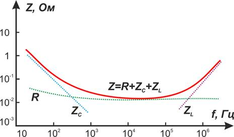
Рисунок C.10 – Полный импеданс конденсатора Z складывается из резистивной R, емкостной ZC и
индуктивной ZL составляющих [Алюминиевые электролитические конденсаторы Samwha. С. Швецов.
Новости Электроники №11, 2008]
Во многих устройствах силовой
электроники например электронных балластах, зарядных устройствах, и т.д. через электролитические
конденсаторы протекают значительные импульсы тока. Это, в свою очередь, приводит к нагреву конденсатора,
высыханию электролита и выходу из строя до завершения гарантированного срока службы.
Кроме представленных параметров отдельно выделяют диапазон рабочих температур. Так существуют типы
электролитических конденсаторов предназначенных для эксплуатации в широком температурном диапазоне – до 155
°С.
При выборе электролитических конденсаторов для сильноточных цепей мощных преобразователей следует уделить
особое внимание параметрам ESL и ESR, определяющим электрический и тепловой режимы работы конденсаторов.
Причины выхода из строя электролитических конденсаторов
При последовательном соединении
электролитов разница в емкости может привести к отрицательному напряжению на одном из них обладающего
меньшей емкостью, для предотвращения этого использую схему включения с защитными диодами и выравнивающими
резисторами (рисунок C.11). При параллельном соединении электролитов необходимо, чтобы паразитная
индуктивность соединения между ними была минимальной. Для этого необходимо минимизировать расстояние между
ними на плате. Несоблюдение этого условия может привести к перенапряжениям за счет колебательного процесса
вызванного паразитными LC-контуром [Особенности применения электролитических конденсаторов. А. Колпаков.
Схемотехника № 1,2,3 2000]. Для кардинального уменьшения паразитной индуктивности конденсаторной батареи
можно использовать двустороннюю печатную плату с токопроводящими шинами-дорожками с каждой и сторон платы:
например верхняя сторона для положительной полярности, нижняя сторона – для отрицательной. При таком
расположении площадь токовой петли будет минимальной. В справочных листках на конденсаторы указывается
информация об допускаемой амплитуде выбросов обратного напряжения (например до –1.5 В для конденсаторов
EPCOS [Алюминиевые электролитические конденсаторы EPCOS. Справочник -
http://www.platan.ru/docs/library/ALCAP_EPCOS.pdf]).
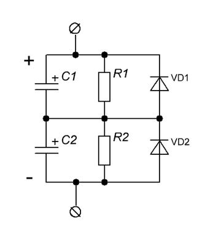
Рисунок C.11. Схема последовательного включения электролитических конденсаторов с защитными диодами и
выравнивающими резисторами
При переохлаждении конденсатора до
низкой температуры (-40 С°) и повышение температуры выше максимальной приводят к резкому росту ESR и
уменьшению емкости.
При
напряжениях на конденсаторе близких к максимальному рабочему имеет место выделение тепла обусловленного
током утечки (параллельное паразитное сопротивление r), что уменьшает срок службы конденсаторов. При этом
необходимо понимать, что ток утечки значительно возрастает с ростом температуры.
Протекание
высокочастотной составляющей тока сопровождается выделением тепла, что существенно влияет на срок службы
конденсаторов.
Механические вибрации могут стать
причиной разгерметизации корпуса конденсатора, что в свою очередь приводит к быстрому высыханию электролита
и выходу конденсатора из строя.
Влияние ESR на амплитуду пульсаций напряжения емкостного фильтра
Одним из наиболее распространенных применений электролитических конденсаторов в силовой электронике являются
емкостные фильтры напряжения. Электролиты стоят во входных цепях импульсных источников питания сразу после
выпрямителя сетевого напряжения, электролиты используют и в выходных цепях источников питания. Одним из
основных параметров емкостных фильтров является коэффициент пульсаций. Коэффициент пульсаций с одной стороны
определяется процессом разряда емкости током нагрузки. Амплитуда пульсаций, вызванная разрядом-зарядом
емкости конденсатора равна:
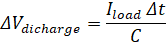
где:
Iload – ток разряда;
С – емкость конденсатора;
Δt – время между импульсами зарядного тока (определяется частотой питания ёмкостного фильтра).
Эту составляющую пульсаций можно снизить до очень малой величины увеличивая емкость и частоту.
Другая составляющая пульсаций определяется падением напряжения на внутреннем сопротивлении конденсатора
ESRC и равна:
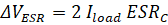
где:
Iload – ток разряда;
ESRC – внутреннее последовательное сопротивление конденсатора.
Множитель 2 показывает удвоение амплитуды поскольку при заряде напряжение на нагрузке выше на величину Iload
· ESRC, а при разряде меньше на величину Iload · ESRC (меняется направление
тока, проходящего через конденсатор).
Эта составляющая пульсаций не зависит от емкости частоты, а определяется только током нагрузки и внутренним
сопротивлением конденсатора.
Для выходных каскадов импульсных высокочастотных источников питания типична ситуация когда пульсации
вызванные падением напряжения на внутреннем сопротивлении конденсатора, выше пульсаций обусловленных
разрядом-зарядом емкости выходного конденсатора:
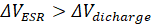
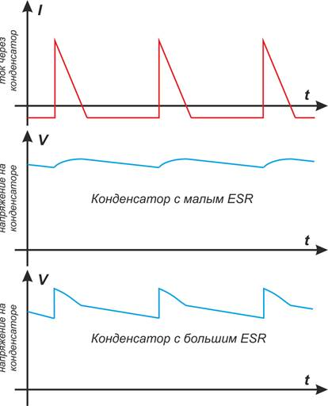
Рисунок C.12 – Пульсации напряжения на конденсаторе с малым и большим ESR при их одинаковой емкости
О параллельном включении керамических конденсаторов и электролитов
В схемотехнике выходных фильтров источников питания часто встречается последовательное соединение
электролитического конденсатора и керамического (либо пленочного) малой емкости. Вопреки распространенному
мнению, такое решение практически не снижает коэффициент пульсаций, но способствует подавлению
высокочастотных помех, вызываемых коммутацией ключевых элементов. Для уменьшения коэффициента пульсаций
используют LC-фильтры.
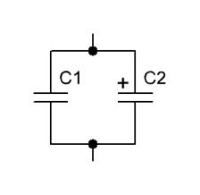
Рисунок C.13 – Параллельное включение электролитических и керамических конденсаторов
О монтаже электролитических конденсаторов
Не следует сильно загибать выводы электролитических конденсаторов непосредственно у корпуса – это может
привести к нарушению герметичности и уменьшению срока службы.
Алюминиевые электролитические конденсаторы
Как следует из названия, диэлектриком в данных конденсаторах является пленка оксида алюминия. Алюминиевые
электролитические конденсаторы с жидким электролитом наиболее распространены среди электролитических
конденсаторов. Это обусловлено высокой удельной емкостью, низкой стоимостью и широким диапазоном рабочих
напряжений (15-450 В) и ёмкостей (1 мкФ - 1 Ф). Столь высокие значения удельной емкости достигаются за счет
увеличения эффективной площади конденсаторов путем травления анодной фольги. Алюминиевые электролитические
конденсаторы допускают кратковременные импульсные перенапряжения не более чем 10-15 % от рабочего
напряжения.
Алюминиевые электролитические конденсаторы имеют параллельное сопротивление, уменьшающееся с ростом
напряжения на конденсаторе. То есть с увеличением напряжения ток разряда конденсатора будет нелинейно
возрастать [Алюминиевые электролитические конденсаторы EPCOS. Справочник -
http://www.platan.ru/docs/library/ALCAP_EPCOS.pdf]. Электролитические конденсаторы – устройства полярные и
могут работать только при одной полярности напряжения, максимальное обратное напряжение на электролитах не
должно превышать величину порядка 1,5 В. Следует быть осторожным при использовании стандартных алюминиевых
«электролитов» в схемах, которые должны работать «долго и счастливо». Реально срок их службы составляет
несколько десятков тысяч часов и зависит от температурного и токового режима работы.
Уменьшение температуры приводит к снижению (на 10-15 %) ёмкости алюминиевых электролитических конденсаторов в
пределах рабочего температурного диапазона. Это необходимо учитывать при проектировании схем работающих в
«уличных» условиях.
Для электролитических конденсаторов принято считать, что потери определяются только потерями, обусловленными
эквивалентным последовательным сопротивлением. Это обусловлено тем, что на высоких частотах «электролиты»
попросту не используются. При таком подходе ESR связано с тангенсом угла потерь соотношением [Алюминиевые
электролитические конденсаторы EPCOS. Справочник - http://www.platan.ru/docs/library/ALCAP_EPCOS.pdf]:
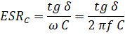
где
tg δ – тангенс угла потерь;
f – частота на которой выполнено измерение tg δ;
C – емкость конденсатора.
Зная значение тангенса угла потерь и частоту, на которой он был измерен можно рассчитать величину ESR.
Танталовые электролитические конденсаторы
Танталовые конденсаторы по сравнению с алюминиевыми имеют большую удельную емкость и соответственно меньшие
размеры. Кроме этого у них лучшая температурная стабильность, малые утечки, шире диапазон рабочих
температур, значительно больший срок службы. И существенно большая стоимость. Именно по этим причинам
танталовые конденсаторы являются атрибутом элитной электроники. Характерные значения емкости – 1-470 мкФ,
рабочего напряжения – 4-50 В. В цепях помехоподавления танталовые электролитические конденсаторы могут быть
заменены на неполярные многослойные керамические конденсаторы большой емкости имеющие меньшие значения ESR,
ток утечки и стоимость.
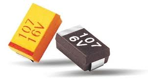
Рисунок C.14 – Танталовые конденсаторы
Особые требования к конденсаторам в источниках питания
К входным конденсаторам импульсных стабилизаторов и преобразователей предъявляются особые требования по
входному импедансу, в первую очередь к ESL (EffectiveSeries Inductance) и во вторую очередь к ESR
(Equivalent Series Resistance). Даже сравнительно малая последовательная индуктивность входных конденсаторов
может стать причиной выбросов напряжения и паразитных осцилляций на входных цепях преобразователей, что в
свою очередь может привести к пробою коммутационных элементов. Традиционным решением является использование
на входе преобразователя в дополнение к основным, как правило, электролитическим конденсаторам конденсаторов
малой емкости, но обладающих низким ESL (как правило, пленочных или керамических). Эти конденсаторы
располагают в непосредственной близости к силовому контуру коммутации. [Switching Regulator Fundamentals.
Application Report SNVA559A–September 2012–Revised September 2016. Texas Instruments Incorporated.
http://www.ti.com/lit/an/snva559a/snva559a.pdf].
К выходным конденсаторам, которые выполняют роль фильтров и накопителей энергии в импульсных источниках
питания предъявляются требования в первую очередь к их ESR. При этом особое внимание нужно обращать на
диапазон частот, для которого изготовитель указывает ESR. Часто, для конденсаторов общего применения
указывается ESR для частоты 120 Гц. На высоких частотах 20-100 кГц значение может сильно измениться. Поэтому
необходимо точно знать ESR для частоты соответствующей рабочей частоте преобразователя. Кроме этого ESR
обычных алюминиевых электролитических конденсаторов может изменяться более чем в 40 раз при изменении
температуры в диапазоне от -40 до +25 °С. [Switching Regulator Fundamentals. Application Report
SNVA559A–September 2012–Revised September 2016. Texas Instruments Incorporated.
http://www.ti.com/lit/an/snva559a/snva559a.pdf]. ESR выходных конденсаторов является основной причиной
пульсаций напряжения на выходе источников питания. Традиционным является параллельное включение
конденсаторов с меньшей емкостью, при этом их ESR оказываются включенными параллельно.
Шунтирующие конденсаторы (bypass capacitors)
Шунтирующие конденсаторы используют для подавления (шунтирования) пульсаций и высокочастотных наводок по
цепям питания микросхем. Традиционно для данных целей используются керамические конденсаторы.
Типоразмеры основных типов конденсаторов
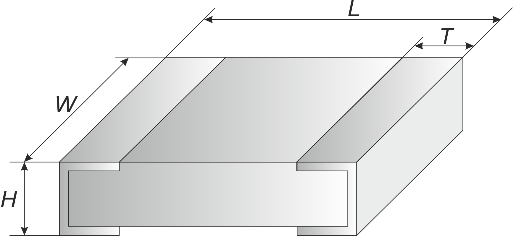
Рисунок C.15 – К типоразмерам керамических SMD-конденсаторов
Таблица C.4 – Типоразмеры и маркировка керамических SMD-конденсаторов
Типоразмер
EIA (дюймы)
Типоразмер
метрический, (мм)
L (мм)
W (мм)
H (мм)
T (мм)
0402
1005
1.0
0.5
0.55
0.2
0603
1608
1.6
0.8
0.9
0.3
0805
2012
2.0
1.25
1.3
0.5
1206
3216
3.2
1.6
1.5
0.5
1210
3225
3.2
2.5
1.7
0.5
1812
4532
4.5
3.2
1.7
0.5
1825
4564
4.5
6.4
1.7
0.5
2220
5650
5.6
5.0
1.8
0.5
2225
5664
5.6
6.3
2.0
0.5
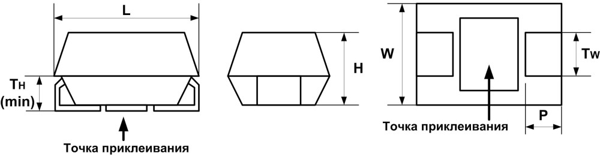
Рисунок C.16 – Габаритные размеры танталовых чип-конденсаторов
Таблица C.5 – Типоразмеры и маркировка рабочих напряжений танталовых SMD-конденсаторов
Типоразмер
Габаритные размеры, мм
L
W
H
P
TW
TH
J
1608
1.6 ± 0.30
0.8 ± 0.1
0.8 ± 0.1
0.3 ± 0.15
0.3 ± 0.1
P
2012
2.0 ± 0.20
1.25 ± 0.1
1.2 ± 0.1
0.5 ± 0.15
0.9 ± 0.1
0.3
R
2012
2.0 ± 0.20
1.25 ± 0.1
0.95 ± 0.1
0.5 ± 0.1
0.9 ± 0.1
0.3
A
3216
3.2 ± 0.20
1.6 ± 0.20
1.6 ± 0.20
0.80 ±0.30
1.2 ± 0.10
0.70
B
3528
3.5 ± 0.20
2.8 ± 0.20
1.9 ± 0.20
0.80±0.30
2.2 ± 0.10
0.70
C
6032
6.0 ± 0.30
3.2 ± 0.30
2.5 ± 0.30
1.3 ± 0.30
2.2 ± 0.10
1.0
D
7343
7.3 ± 0.30
4.3 ± 0.30
2.8 ± 0.30
1.3 ± 0.30
2.4 ± 0.10
1.0
E (X)
7343H
7.3 ± 0.30
4.3 ± 0.30
4.0 ± 0.30
1.3 ± 0.30
2.4 ± 0.10
1.0
V
7343-20
7.3 ± 0.30
4.3 ± 0.30
2.0 max
1.3 ± 0.30
2.4 ± 0.10
1.0
Таблица C.6 – Маркировка рабочих напряжений танталовых SMD-конденсаторов